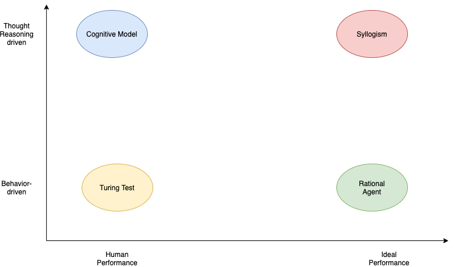

The four approaches towards AI
Contents
The four approaches towards AI¶

The Turing Test Approach¶
A 5-min behavioral intelligence test, where an interrogator chats with the player and at the end it guesses if the conversation is with a human or with a programmed machine. A Turing contest (Loebner Prize) is is held annually since 1991.
Competitions such as the Alexa prize is not a turing test. The Alexa Prize creates social bots that engage in interesting, human-like conversations, not to make them indistinguishable from a human when compared side-by-side. Social bots may have ready access to much more information than a human.
| Summary of the Turing Test | The Alexa Prize is not a Turing Test |
What capabilities we need to have to pass a turing test.
Natural Language Processing
Knowledge Representation
Automated Reasoning
Machine Learning
Computer Vision
Robotics
The last two capabilities are not needed for the verbal oriented Turing test but they are needed for what is called the total Turing test. According to this test, the player and the interrogator can communicate physically. For example, there is a hatch where the interrogator can pass objects to the player. Obviously the player must have perception abilities to understand what object it is (5) and possibly a body that can manipulate the object (6). Embodied AI research is one of the hotter areas of AI today as we will see in the Agents section.
The Cognitive Model approach¶
Newell, in his book “Unified Theories of Cognition”, defines cognition as:
Memory, learning, skill
Perception, motor behavior
Problem solving, decision making, routine action
Language
Motivation, emotion
Imagining, dreaming
How do we differentiate a cognitive model from a conceptual or statistical model? “Cognitive science is concerned with understanding the processes that the brain uses to accomplish complex tasks including perceiving, learning, remembering, thinking, predicting, problem solving, decision making, planning, and moving around the environment. The goal of a cognitive model is to scientifically explain one or more of these basic cognitive processes, or explain how these processes interact.”, –Busemeyer & Diederich (2010)
These theories of cognitive processes are tested via various cognitive architectures. Its important to realize that much of todays’ debate about the path ahead in AI maps to the few different architectures. The hybrid architecture (symbolic and connection-oriented) is what is being investigated today by many research institutions.
The Syllogism-based approach¶
The translation from Greek of the word syllogism is to support logic.
This approach emphasizes how we think the right way and encodes the pattern of logical arguments that can reach correct conclusions from a set of propositions (premises). Problem solving where the problem statement is expressed in a logic notation, matured in the 60s. As we have seen in the course introduction such rule-based systems are still with us and for small and deterministic state spaces can provide a very compact and elegant way to inference.
Logic-based reasoning is coming back to fashion. One of the most promising areas is their application to interpretability (also known as explainability ) of deep learning based methods for e.g. classification in medical diagnosis. Probabilistic Logic Networks (PLN) are extensions of this approach to address problems with uncertainty.
The Rational Agent approach¶
A rational agent acts to achieve the best outcome. The rational approach encompasses the syllogism and Turing-test approaches. We still need provably correct inference and the formal representations of logic as well as the ability to perceive, communicate, and learn to achieve a good outcome. But we need to generalize these approaches to include “good-enough” inference and adaptation to the changing environment contexts that the agent is facing without giving up on the mathematical formality that utility theory allows us to design such agents.
The agent facing a fire is an instructive example. There maybe no time for optimal reasoning to a conclusion (e.g. run) but a simple reflexive plan can offer the best outcome.